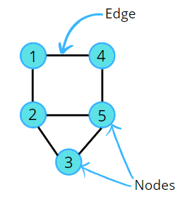
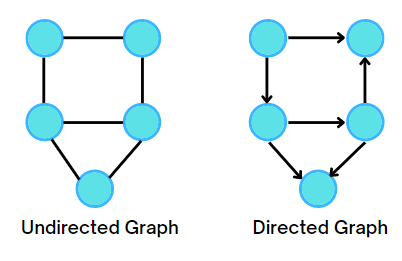
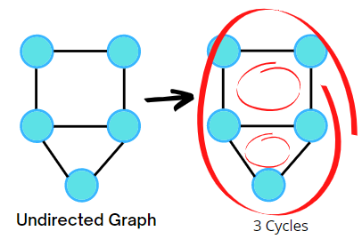
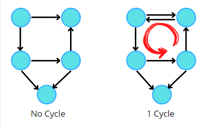

There are two types of data structures
We are aware of linear data structures such as arrays, stacks, queues, and linked lists. They are called
linear because data elements are arranged in a linear or sequential manner.
The only non-linear data structure that we’ve seen so far is Tree. In fact, a tree is a special type of
graph with some restrictions. Graphs are data structures that have a wide-ranging application in real life.
These include analysis of electrical circuits, finding the shortest routes between two places, building
navigation systems like Google Maps, even social media using graphs to store data about each user, etc. To
understand and use the graph data structure, let’s get familiar with the definitions and terms associated
with graphs.
Definitions and Terminology
A graph is a non-linear data structure consisting of nodes that have data and are connected to other nodes
through edges.
Nodes are circles represented by numbers. Nodes are also referred to as vertices. They store the data. The
numbering of the nodes can be done in any order, no specific order needs to be followed.
In the following example, the number of nodes or vertices = 5

Types of graphs

- An undirected graph is a graph where edges are bidirectional, with no direction associated with
them,
i.e, there will be an undirected edge. In an undirected graph, the pair of vertices representing any
edge is unordered. Thus, the pairs (u, v) and (v, u) represent the same edge.
- A directed graph is a graph where all the edges are directed from one vertex to another, i.e, there
will
be a directed edge. It contains an ordered pair of vertices. It implies each edge is represented by
a
directed pair . Therefore, and represent two different edges.
A graph is said to have a cycle if it starts from a node and ends at the same node. There can be multiple
cycles in a graph.
-
Undirected Graph

-
Directed Graph
